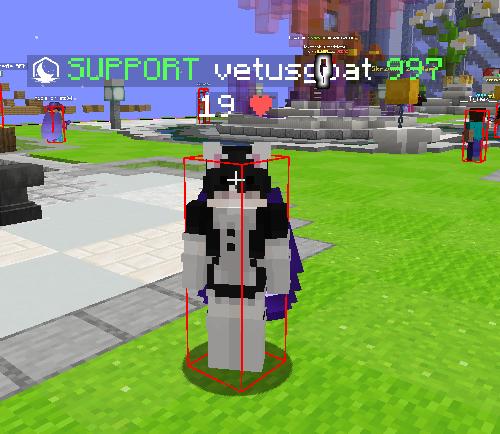
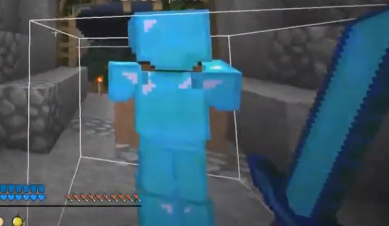

ETAP | SPRAWDZENIE HITBOXÓW
Powiedz graczu aby kliknął na klawiaturze
F3 + B
, to spowoduje że wyświetlą mu sie hitboxy. Jeżeli hitboxy
będą powiększone, to oznacza że ma cheaty i możesz go już zbanować za wykrycie cheatów.
Przykład
normalnych
hitboxów:

Przykład
zmienionych
hitboxów:

Nastepny ETAP